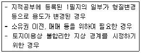
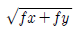
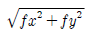

지적기능사 (2010-10-03 기출문제)
1과목: 지적일반(임의구분)
1. 다음 중 지목의 설정 원칙으로 옳지 않은 것은?
- 일필일목의 원칙
- 등록선후의 원칙
- 주지목추종의 원칙
- 일시적변경의 원칙
(정답률: 83%)

2. 다음 중 지적의 특성으로 가장 거리가 먼 것은?
- 역사성
- 정확성
- 안전성
- 가치성
(정답률: 64%)
3. 다음 중 토지대장과 임야대장에 등록하여야 할 사항에 해당하지 않는 것은?
- 지목
- 면적
- 지번
- 경계
(정답률: 63%)
4. 다음 중 3차원지적에 대한 설명으로 가장 거리가 먼 것은?
- 입체지적이라고도 한다.
- 지하의 각종 시설물과 지상의 고층화된 건축물을 효율적으로 관리할 수 있다.
- 다목적 지적으로서 다양한 토지 정보를 제공해 주는 역할을 한다.
- 경계를 표시하는 방법 및 측량방법에 따른 분류에 해당한다.
(정답률: 76%)
5. 다음 중 토렌스시스템(Torrens System)의 일반적 이론과 가장 거리가 먼 것은?
- 거울이론
- 보험이론
- 커튼이론
- 점증이론
(정답률: 91%)
6. 다음 중 도시개발사업 등의 착수 ㆍ 변경 또는 완료 사실의 신고는 그 사유가 발생한 날부터 최대 몇일 이내에 지적소관청에 하여야 하는가?
- 10일 이내
- 15일 이내
- 20일 이내
- 30일 이내
(정답률: 53%)
7. 다음 중 지적소관청이 지적공부에 등록된 사항을 직권으로 정정할 수 있는 경우가 아닌 것은?
- 지적공부에 소유자의 이름이 틀린 경우
- 토지이동정리 결의서의 내용과 다르게 정리된 경우
- 지적공부의 작성 또는 재작성 당시 잘못 정리된 경우
- 지적도에 등록된 필지가 면적의 증감없이 경계의 위치만 잘못된 경우
(정답률: 45%)
8. 다음 중 지적삼각점측량의 방법에 해당하지 않는 것은?
- 경위의 측량방법
- 광파기측량방법
- 전파기측량방법
- 평판측량방법
(정답률: 73%)
9. 다음과 같은 경우에 신청할 수 있는 토지 이동은?

- 신규등록
- 등록전환
- 분할
- 합병
(정답률: 62%)
10. 다음 중 경계점좌표등록부에 등록하는 지역의 토지의 산출면적이 123.55m2일때 결정면적은 얼마인가?
- 123.55m2
- 123.5m2
- 123.6m2
- 124m2
(정답률: 77%)
11. A점과 B점의 종선차(ΔX)가 45m이고, 횡선차(Δy)가 67m일 때 방위각의 크기는 얼마인가?
- 326°6′47″
- 236°6′47″
- 56°6′47″
- 86°6′47″
(정답률: 52%)
12. 다음 중 자오선의 북방향(북극)을 기준으로 하여 시계방향(우회)으로 측정한 각을 무엇이라 하는가?
- 도북 방위각
- 자북 방위각
- 진북 방위각
- 자오선 수차
(정답률: 84%)
13. 다음 중 분할 후의 각 필지의 면적의 합계와 분할전 면적과의 오차의 허용범위를 구하는 식으로 옳은 것은? (단. A: 오차허용면적, M: 축척분모, F: 원면적)
- A=0.0232M√F
- A=0.0262M√F
- A=0.232M√F
- A=0.262M√F
(정답률: 68%)
14. 두 점 간의 실제거리 50m을 도상에서 2mm로 나타낼 때의 축척은 얼마인가?
- 1/1000
- 1/2500
- 1/25000
- 1/50000
(정답률: 78%)
15. 다음 중 임야도의 축척에 해당하는 것은?
- 1/1000
- 1/1200
- 1/2400
- 1/3000
(정답률: 89%)
16. 다음 중 토지에 대한 표시를 지적공부에 등록ㆍ공시 하여 야만 공식적인 효력이 인정된다는 이념은?
- 지적공개주의
- 지적형식주의
- 지적국정주의
- 지적심사주의
(정답률: 82%)
17. 다음 중 합병신청을 할 수 없는 경우에 해당하지않는 것은?
- 합병하려는 토지에 임차권의 등기가 있는 경우
- 합병하려는 토지의 지번부여지역이 서로 다른 경우
- 합병하려는 지목이 서로 다른 경우
- 합병하려는 소유자가 서로 다른 경우
(정답률: 62%)
18. 지적세부측량시 두 점 간의 경사거리가 100m이고 연직각이 20°인 경우 수평거리는 얼마인가?
- 90.12m
- 91.18m
- 93.97m
- 95.08m
(정답률: 54%)
19. 다음 중 방위각법에 의한 지적도근점측량에서 연결 오차를 구하는 식이 옳은 것은?


- fx+fy
- fx2+fy2
(정답률: 87%)
20. 3변의 길이가 각각 30m, 30m, 20m인 삼각형의 면적은 얼마인가?
- 252.8m2
- 262.8m2
- 272.8m2
- 282.8m2
(정답률: 59%)
2과목: 지적측량(임의구분)
21. 다음 중 원칙적으로 축척변경위원회의 위원을 위촉하는 자는?
- 행정안전부장관
- 도지사
- 지적소관청
- 국토지리정보원장
(정답률: 71%)
22. 다음 중“등록전환”의 정의로 옳은 것은?
- 축척을 바꾸어 등록하는 것
- 지적공부에 등록된 지목을 다른 지목으로 바꾸어 등록하는 것
- 면적을 바꾸어 등록하는 것
- 임야대장에 등록된 토지를 토지대장에 옮겨 등록하는 것
(정답률: 83%)
23. 다음 중 지적공부의 열람 및 등본 발급 신청에 대한 수수료 납부 방법으로 가장 거리가 먼 것은?
- 수입인지
- 수입증지
- 대법원우표
- 현금
(정답률: 71%)
24. 다음 중 지적삼각점을 관측하는 경우 연직각의 관측 방법기준으로 옳은 것은?
- 각 측점에서 정반(正反)으로 각 1회 관측할 것
- 각 측점에서 정반(正反)으로 각 2회 관측할 것
- 각 측점에서 정반(正反)으로 각 3회 관측할 것
- 각 측점에서 정반(正反)으로 각 5회 관측할 것
(정답률: 87%)
25. 다음 중 직경 3mm 크기의 원 안에 검은색으로 엷게 채색하여 제도하는 지적측량기준점은?
- 3등 삼각점
- 4등 삼각점
- 지적삼각점
- 지적삼각보조점
(정답률: 72%)
26. 다음 중 경계는 얼마의 폭을 기준으로 제도하는가?
- 0.1mm
- 0.2mm
- 0.3mm
- 0.4mm
(정답률: 66%)
27. 다음 중 경계의 법률적 정의로 옳은 것은?
- 담장 및 울타리
- 지적도상 경계
- 지상의 경계표지
- 논두렁 및 밭둑
(정답률: 78%)
28. 다음 중 면적에 대한 설명으로 옳지 않은 것은?(단, 경계점좌표등록부에 등록하는 지역의 경우는 고려하지 않는다.)
- 면적의 결정방법 등에 필요한 사항은 대통령령으로 정한다.
- 면적의 단위는 제곱미터로 한다.
- 지적도의 축척이 1/1200인 경우, 1필지의 면적이 1제곱미터 미만일 때에는 1제곱미터로 한다
- 지적도의 축척이 1/600 인 경우, 1필지의 면적이 0.1제곱미터 미만일 때에는 1제곱미터로 한다.
(정답률: 62%)
29. 다음 중 연접되는 토지 간에 높낮이 차이가 있는 경우 지상경계를 새로 결정하는 기준이 옳은 것은?
- 그 구조물 등의 중앙
- 그 구조물 등의 하단부
- 그 구조물 등의 상단부
- 그 경사면의 상단부
(정답률: 63%)
30. 다음 중 등록전환에 따른 도면의 제도 방법으로 옳지 않은 것은?
- 등록전환하는 경우 임야도의 그 지번 및 지목을 말소한다.
- 등록전환으로 도면에 경계, 지번 및 지목을 새로이 등록하는 경우에는 이미 비치된 도면에 제도하는 것을 원칙으로 한다.
- 이미 비치된 도면에 정리할 수 없는 경우에는 새로이 도면을 작성하여야 한다.
- 등록전환하는 경우 임야도의 당해 필지의 내부를 검은 색으로 엷게 채색한다.
(정답률: 54%)
31. 다음 중 지목과 표기하는 부호의 연결이 옳지 않은 것은?
- 전 - 전
- 답 - 답
- 잡종지 - 잡
- 유원지 - 유
(정답률: 79%)
32. 다음 중 구분 소유단위별로 소유자에 관한 등기 사항을 등록한 지적공부는?
- 공유지연명부
- 토지대장
- 대지권등록부
- 건축물 관리대장
(정답률: 45%)
33. 다음 중 직각좌표계 원점에 해당하지 않는 것은?
- 중부좌표계
- 수준좌표계
- 서부좌표계
- 동부좌표계
(정답률: 83%)
34. 다음 중토지소유자가 토지의 분할을 신청할 때 분할 사유를 적은 신청서에 첨부하여야 하는 서류에 해당하는 것은?
- 법원의 확정판결서 정본
- 등기부등본
- 지적도등본
- 토지분할신청대행지시서
(정답률: 56%)
35. 다음 중 전자면적측정기에 따른 면적의 측정은 도상에서 몇 회 측정하여 그 교차가 허용면적 이하일 때 평균 몇 회를 측정면적으로 하는가?
- 2회
- 3회
- 4회
- 5회
(정답률: 82%)
36. 다음 중 우리나라의 현행 지적관계 법령에서 규정한 지목의 수로 옳은 것은?
- 18종목
- 21종목
- 24종목
- 28종목
(정답률: 90%)
37. 다음 중 가장 오래된 역사를 가지고 있는 최초의 지적으로 지적공부의 여러 가지 등록사항 중 면적과 토지 등급을 정확하게 측정하고 조사하는 것이 중요시 되는 지적제도는?
- 세지적
- 법지적
- 다목적지적
- 소유지적
(정답률: 81%)
38. 표준길이보다 5cm가 긴 50m의 줄자로 거리를 측정한 값이 500m였다. 이 거리의 정확한 값은 얼마인가?
- 495.0m
- 499.5m
- 500.5m
- 5⑤.0m
(정답률: 73%)
39. 다음 중 지적소관청의 정의로 옳은 것은?
- 지적공부를 관리하는 시장ㆍ군수 또는 구청장을 말한다.
- 시ㆍ도의 지역전산본부를 말한다.
- 지번을 부여하는 단위지역으로 시군을 말한다.
- 지적측량을 주관하는 관리 감독자를 말한다.
(정답률: 75%)
40. 지적기준점의 종선좌표(X)가 450173.40m 횡선좌표 (Y)가 203207.93m 일때 상부 종선좌표의 값은? (단, 1/600 도면에서 도곽의 종선길이는 200m이다.
- 450200m
- 451200m
- 452200m
- 453200m
(정답률: 43%)
3과목: 지적공부정리(임의구분)
41. 다음 중 지적공부에 등록하는 지번 지목 면적 경계 또는 좌표는 토지의 이동이 있을 때 토지소유자의 신청에 의하여 누가 결정하는가?
- 지적소관청
- 등기공무원
- 법원판사
- 사업시행자
(정답률: 89%)
42. 다음 중 지적도면에 지목의 부호를 “광”으로 표기하여야 하는 필지의 지목은?
- 관광지
- 광장
- 광천지
- 광야
(정답률: 71%)
43. 다음 중 지번에 대한 설명으로 옳지 않은 것은?
- 토지의 특정성으로 보장하기 위한 요소다.
- 토지의 식별에 쓰인다.
- 지번부요지역이란 시 군 또는 이에 준하는 지역이다.
- 토지의 지리적 위치의 고정성을 확보하기 위하여 부여한다.
(정답률: 59%)
44. 다음 중 지번의 표기 방법으로 가장 옳은 것은>?
- 아라비아숫자로 표기한다.
- 한자의 명조체로 표기한다.
- 한자의 고딕체로 표기한다.
- 로마 숫자로 표기한다.
(정답률: 87%)
45. 다음 중 경위의의 시준축과 수평축이 직교하지 않아 생기는 오차의 처리 방법으로 옳은 것은?
- 망원경을 정위 반위로 측정하여 평균값을 취한다.
- 시계방향과 반시계 방향에서 측정하여 평균값을 취한다.
- 두 점 사이의 높이를 같게 하여 측정한다.
- 연직축과 수평 기포관축과의 직교를 조정한다.
(정답률: 72%)
46. 다음 중 지적제도를 세지적, 법지적, 다목적지적으로 분류하는 기준으로 옳은 것은?
- 등록사항의 차원에 의한 분류
- 발전 단계에 의한 분류
- 등록의무의 강약에 의한 분류
- 경계의 표시방법에 의한 분류
(정답률: 75%)
47. 다음 중 지목이 임야에 해당하는 것은?
- 식용으로 죽순을 재배하는 토지
- 과수류를 집단적으로 재배하는 토지
- 축산업을 하기 위하여 초지를 조성한 토지
- 산림 및 원야를 이루고 있는 수림지
(정답률: 87%)
48. 지번이 1⑤-1, 111, 122, 132-3 인 4필지를 합병할 경우 새로이 부여해야 할 지번으로 옳은 것은?
- 1⑤-1
- 111
- 122
- 132-3
(정답률: 85%)
49. 다음 중 1필지로 정할 수 있는 기준으로 옳지 않은 것은?
- 동일한 면적
- 동일한 용도
- 동일한 소유자
- 연속된 지반
(정답률: 59%)
50. 다음 중 수치지적에 비하여 도해지적이 갖는 단점으로 가장 거리가 먼 것은?
- 축척의 크기에 따라 허용오차가 다르다.
- 도면의 신축방지와 보관 및 관리가 어렵다.
- 축척 및 제도오차의 발생으로 정확도가 낮다.
- 열람용의 별도 도면을 작성하여 보관해야 한다.
(정답률: 53%)
51. 다음 중 면적을 측정하는 경우 도곽선의 길이에 최소 얼마 이상의 신축이 있을 때에 이를 보정하여야 하는가?
- 0.3mm
- 0.4mm
- 0.5mm
- 0.6mm
(정답률: 80%)
52. 다음 중 토지조사사업 당시의 재결기관은?
- 부와 면
- 임시토지조사국
- 임야조사위원회
- 고등토지조사위원회
(정답률: 67%)
53. 다음 중 임야조사사업의 특징으로 옳지 않은 것은?
- 축척이 대축척이었다.
- 토지조사사업의 기술자를 채용하여 시간과 경비를 절약 할 수 있었다.
- 토지조사사업에 비해 적은 인원으로 업무를 수행하였다.
- 적은 예산으로 이 사업을 완성하였다.
(정답률: 74%)
54. 다음 중 지적공부에 해당하지 않는 것은?
- 토지대장집계부
- 토지대장
- 임야대장
- 지적도
(정답률: 71%)
55. 다음 중 우리나라 토지대장과 같이 지번 순서에 따라 등록되고 분할되더라도 본번과 관련하여 편철 하고 소유자의 변동을 계속 수정하여 관리하는 것으로, 개개의 토지를 중심으로 등록부를 편성 하는 방법은?
- 인적 편성주의
- 물적 편성주의
- 연대적 편성주의
- 혼합적 편성주의
(정답률: 63%)
56. 다음 중 축척변경 시행지역의 토지는 언제를 기준으로 토지의 이동이 있는 것으로 보는가?
- 축척변경 승인신청공고일
- 축척변경 확정공고일
- 축척변경 청산금정산일
- 축척변경 이의신청통지일
(정답률: 89%)
57. 다음 중 지적측량을 하여야 하는 경우가 아닌것은?
- 지적공부를 복구하는 경우
- 경계점을 지상에 복원하는 경우
- 지적측량 성과를 검사하는 경우
- 토지대장의 지목을 변경하는 경우
(정답률: 73%)
58. 다음 중 토지조사사업 당시의 조사내용에 해당하지않는 것은?
- 토지의 소유권
- 토지의 가격
- 토지의 외모
- 토지의 지질
(정답률: 67%)
59. 다음 중 필지의 배열이 배열이 불규칙한 지역에서 진행순서에 따라 지번을 부여하는 방식으로 진행 방향으로 지번이 순차적으로 연속되며 일반적으로 농촌지역에 적합한 지번 부여방식은?
- 사행식
- 기우식
- 단지식
- 자유부번식
(정답률: 80%)
60. 다음 중 일람도의 등재사항에 해당하지 않는 것은?
- 도면의 제명 및 축척
- 도곽선의 그 수치
- 지번
- 도면번호
(정답률: 41%)